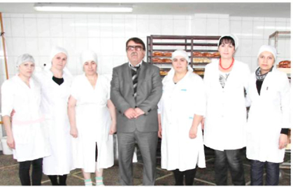

О КОМПАНИИ
Среди всех продуктов питания хлебу испокон веков отводилась особая роль.
Ни праздничный, ни каждодневный стол не обходятся без него, ведь трапеза без хлеба не способна полноценно насытить и доставить истинное удовольствие. Хлеб, действительно, единственный в своем роде продукт с богатейшей историей, и нет такой кухни в мире, где не присутствовал бы хлеб. Ведь хлеб -залог здоровья.
Питательная ценность хлеба - это большое содержание усвояемых полисахаридов, белка, значительное количество витаминов группы «В» и минеральных веществ. Если раньше все хозяйки занимались хлебопечением самостоятельно, то у большинства современных женщин на это просто не хватает времени. Поэтому многие порой задумываются: где можно приобрести вкусный и качественный хлеб? Ответ на этот вопрос очевиден -вот уже 15 лет в Махачкале существует хлебозавод «Дагестан» - главный гид в мире хлеба и хлебобулочных изделий в нашей республике.
Под чутким руководством заслуженного работника промышленности Дагестана Далгата Джамматовича Бийбулатова хлебозавод «Дагестан» зарекомендовал себя как один из лучших производителей хлеба и хлебобулочных изделий. Этот человек- фанат своего дела, он постоянно думает об улучшении качества и расширении ассортимента продукции, не жалея ни средств, ни собственных сил и здоровья.
Далгат Джамматович - руководитель с большой буквы, он трепетно и заботливо относится к каждому из своих рабочих. За время своей работы хлебозавод сильно изменился в лучшую сторону: обновлены оборудование и транспортный парк, начато строительство нового трехэтажного здания хлебозавода и, конечно же, постоянно повышается качество продукции.
Наш хлебозавод является одним из крупнейших производителей хлебопекарной отрасли Республики Дагестан, который поддерживает и приумножает традиции российского пекарского искусства. На сегодняшний день завод вырабатывает более 100 наименований продукции. Ежедневно автомобили, украшенные логотипами "Махачкалинский Хлебозавод №4", развозят свежую хлебобулочную и кондитерскую продукцию по городу и районам.